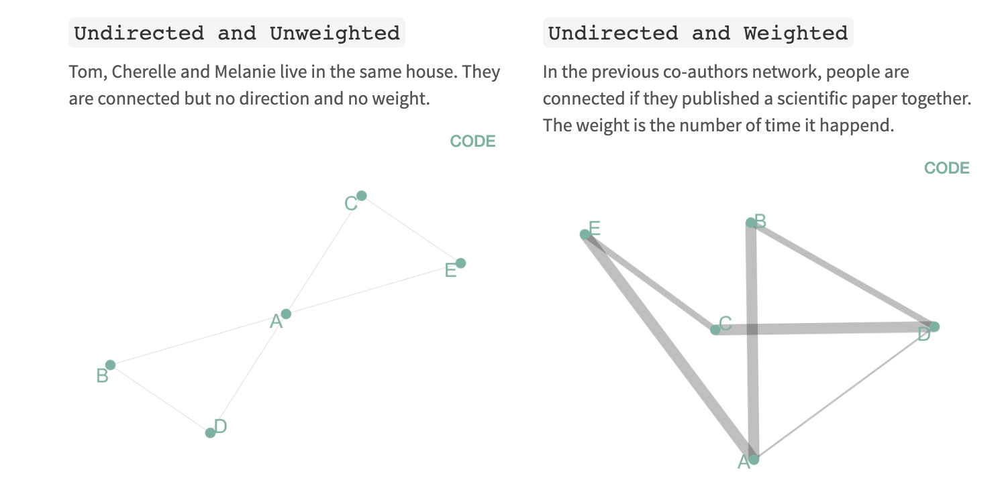
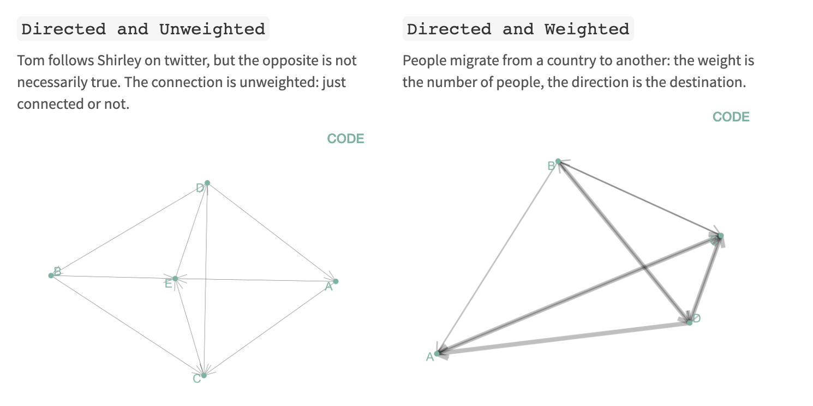
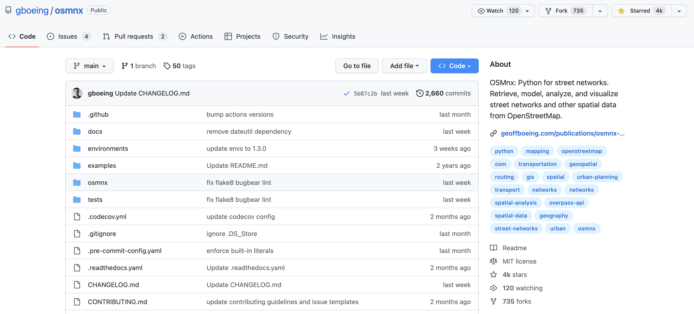

Network data analysis
Contents
Network data analysis¶
In this lecture we will use the Python library OSMnx to download data from OpenStreetMap (OSM) and format it into a graph model. We will then use the NetworkX library to conduct network analysis.
Which is the closest cafe?
How many cafes can we walk to in 15 minutes?
Note that while we will be using network analysis on transport infrastructure, these principles apply to many other types of relational data such as international trade, character dialogue in films, or social media.
import numpy as np
import geopandas as gpd
import osmnx as ox
import networkx as nx
import os
os.environ['USE_PYGEOS'] = '0'
from shapely.geometry import Point, LineString, Polygon, MultiPolygon, MultiLineString
from descartes import PolygonPatch
import matplotlib.pyplot as plt
import folium
OpenStreetMap¶
OpenStreetMap (OSM) is a project that is building a free map of the whole world. Thousands of members are teamed to create an accurate, detailed and up-to-date map that is as good or better than commercial products. Like Wikipedia, OpenStreetMap benefits from the ongoing input of thousands of people around the world.
Everyone can contribute and add objects.
More than eight million participant accounts with more than 16,000 (and rapidly growing) of those highly active members in multiple languages.
Anyone can access the OSM map data for free, and it already is being used in many applications.
There already is full coverage in most urban areas and data is used in many commercial applications.
{kind=link}
Network data¶
Most geospatial data is represented in one of two spatial models, vector-based, i.e. points, lines and polygons, or raster-based, i.e. cells of a continuous grid surface. The vector data model is feature-oriented, as it represents space as a series of discrete entities.
Network data represents interconnections between a set of features or entities. Almost everyone has needed a type of network analysis in their life.
For example:
What is the shortest route to the beach?
Where should we build a hospital to best serve a community?
How can I optimize a package delivery route?
{kind=link}
Types of network data¶
In a network, each feature is represented by a node and connections between nodes are represented by edges. There are four main types of network diagram.
 {kind=link}
{kind=link}
{kind=link}
OSMnx ¶
A Python package to retrieve, model, analyze, and visualize street networks from OpenStreetMap. Users can download and model walkable, drivable, or bikeable urban networks with a single line of Python code, and then easily analyze and visualize them.
{kind=link}
Retrieve OSM data¶
First we will retrieve all features labeled (or tagged) as buildings in Eugene from OSM using OSMnx.
# Specify type of data
tags = {'building': True}
# Download building geometries from OSM
gdf = ox.geometries_from_place('Eugene, Oregon, USA', tags)
/opt/anaconda3/envs/gds/lib/python3.8/site-packages/osmnx/geocoder.py:110: FutureWarning: The frame.append method is deprecated and will be removed from pandas in a future version. Use pandas.concat instead.
gdf = gdf.append(_geocode_query_to_gdf(q, wr, by_osmid))
/opt/anaconda3/envs/gds/lib/python3.8/site-packages/osmnx/geometries.py:805: ShapelyDeprecationWarning: __len__ for multi-part geometries is deprecated and will be removed in Shapely 2.0. Check the length of the `geoms` property instead to get the number of parts of a multi-part geometry.
for merged_outer_linestring in list(merged_outer_linestrings):
/opt/anaconda3/envs/gds/lib/python3.8/site-packages/osmnx/geometries.py:805: ShapelyDeprecationWarning: Iteration over multi-part geometries is deprecated and will be removed in Shapely 2.0. Use the `geoms` property to access the constituent parts of a multi-part geometry.
for merged_outer_linestring in list(merged_outer_linestrings):
This produces a large GeoDataFrame containing over 56,000 buildings.
print(gdf.shape)
(57994, 281)
For the purposes of this assignment, we are only interested in buildings that are tagged as cafes. Cafes are usually tagged as an amenity in OSM so we can filter them using a string comparison.
# Filter cafes
cafes = gdf[gdf['amenity'] == 'cafe'].reset_index()
print(cafes.shape)
(32, 283)
We find that there are 32 cafes in Eugene. This could well be an underestimate since there could be cafes that were not tagged as amenities when mapped. But let’s keep moving forward and plot them.
The cafes are acually polygons so we will compute their centroids to make it simpler to plot.
# Get cafe centroids
cafes['centroid'] = cafes['geometry'].apply(
lambda x: x.centroid if type(x) == Polygon else (
x.centroid if type(x) == MultiPolygon else x))
We can visulize interactively using folium. Again don’t be too worried if you haven’t used this library, we will cover it in a future lecture.
# Define center of map (i.e. Condon Hall) and initial zoom level
lat_lon = [44.0751, -123.0781]
m = folium.Map(location=lat_lon, zoom_start=12)
for i in range(0, cafes.shape[0]):
my_string = cafes.iloc[i]['name']
folium.Marker([cafes.iloc[i]['centroid'].y, cafes.iloc[i]['centroid'].x],
popup=my_string).add_to(m)
# Display map
m
Produce a graph (or network)¶
We will now produce a network using roads, sidewalks, and trails features in OSM. The graph module in OSMnx automatically process a network topology from raw OpenStreetMap data.
Note
A network is also known as a graph in mathematics.

We will use the graph_from_point function which accepts a point (as lat/lon), a distance (in meters), and a network type. The options for network type are available in documentation and include "all_private", "all", "bike", "drive", "drive_service", "walk". We choose a distance of 2 miles and the walk option since we are interested in cafes that are walkable.
# Define coordinates of Condon Hall
lat_lon = (44.0451, -123.0781)
# Define walkable street network 3.2 km around Condon Hall
g = ox.graph_from_point(lat_lon, dist=3200, network_type='walk')
Let’s see what the graph looks like…
# Plot map
fig, ax = ox.plot_graph(g, bgcolor='white', node_color='black', edge_color='grey', node_size=5)
/opt/anaconda3/envs/gds/lib/python3.8/site-packages/geopandas/plotting.py:74: DeprecationWarning: distutils Version classes are deprecated. Use packaging.version instead.
if mpl >= LooseVersion("3.4") or (mpl > LooseVersion("3.3.2") and "+" in mpl):
/opt/anaconda3/envs/gds/lib/python3.8/site-packages/setuptools/_distutils/version.py:351: DeprecationWarning: distutils Version classes are deprecated. Use packaging.version instead.
other = LooseVersion(other)

The first thing to note is that the network structure consists of nodes (dots) and edges (lines). Nodes represent objects while edges represent the relationship between those objects.
Since our network represents transport infrastructure, nodes represent intersections/dead-ends and edges represent the street segments that link them. If we were studying social relationships between Facebook users, nodes would represent users and edges would represent relationships between them (e.g. friendships or group memberships).
Also note that the graph is MultiDiGraph NetworkX object. Multi means that multiple edges are allowed between any pair of nodes. Di stands for directed which means that all our edges are directional. Bidirectional streets are therefore represented with two edges (with identical geometries): one from node 1 to node 2 and another from 2 to 1, to represent both possible directions of flow.
type(g)
networkx.classes.multidigraph.MultiDiGraph
We can call the info function on the graph to see how many nodes and edges it contains.
nx.info(g)
'MultiDiGraph with 12063 nodes and 34284 edges'
Reproject network¶
Once we have produced our graph (or network, it is good practice to reproject it to UTM coorindates so we can work in SI units (i.e. meters) instead of degrees. The graph_project function can be used to reproject the graph. The docs note that if the to_crs argument is set to None, the graph is projected to the UTM coordinate system for the UTM zone in which the graph’s centroid lies.
# Convert to graph
graph_proj = ox.project_graph(g, to_crs=None)
Define points of interest¶
Next we define the centroid locations of Condon Hall and our cafes, making sure that they are in the same projection as our graph (i.e. UTM Zone 10N or EPSG:32610).
We can find Condon Hall in our original OSM building data using string matching.
# Get coordinates of Condon Hall
condon_hall = gdf[gdf['name'] == 'Condon Hall'].reset_index()
# Reproject to UTM Zone 10N
condon_hall = condon_hall.to_crs('EPSG:32610')
cafes = cafes.to_crs('EPSG:32610')
Compute centroids…
condon_hall['centroid'] = condon_hall['geometry'].apply(
lambda x: x.centroid if type(x) == Polygon else (
x.centroid if type(x) == MultiPolygon else x))
cafes['centroid'] = cafes['geometry'].apply(
lambda x: x.centroid if type(x) == Polygon else (
x.centroid if type(x) == MultiPolygon else x))
Format the centroids as a list
Note
To begin with we will only compute the shortest distance between Condon Hall and the first cafe in our GeoDataFrame.
# Get x and y coordinates of Condon Hall
orig_xy = [condon_hall['centroid'].y.values[0], condon_hall['centroid'].x.values[0]]
# Get x and y coordinates of the first cafe
target_xy = [cafes['centroid'].y.values[0], cafes['centroid'].x.values[0]]
Find the shortest path between points¶
The distance module in OSMnx contains functions for calculating distances, shortest paths, and finding nearest node/edge(s) to point(s). Since the coordinates of our points are unlikely to exactly align with one of the nodes, we first have to find the nearest node to our points using the nearest_nodes function.
# Find the node in the graph that is closest to the origin point
orig_node = ox.distance.nearest_nodes(graph_proj, X=orig_xy[1], Y=orig_xy[0], return_dist=False)
# Find the node in the graph that is closest to the target point
target_node = ox.distance.nearest_nodes(graph_proj, X=target_xy[1], Y=target_xy[0], return_dist=False)
Now we can compute the shortest distance between our two points using the shortest_path functions available from NetworkX. The shortest_path function returns a list of nodes along the shortest path, and the shortest_path_length function returns the length of this path.
Note
The weight argument defines the edge attribute to minimize when solving shortest path. In our case, we would like the shortest distance so we choose length.
# Calculate the shortest path
route = nx.shortest_path(G=graph_proj, source=orig_node, target=target_node, weight='length')
length = nx.shortest_path_length(G=graph_proj, source=orig_node, target=target_node, weight='length')
print("Shortest path distance = {t:.1f} km.".format(t=length/1000))
Shortest path distance = 4.0 km.
The route variable contains a list of the nodes constituting the shortest path between the two points. It can plotted using the plot_route_folium function.
# Plot the shortest path using folium
m = ox.plot_route_folium(g, route, weight=5)
m
Find the distance to many cafes¶
To compute the shortest distance from Condon Hall to all the cafes in Eugene we can make a list of all target locations, find the nearest node for each target location, and loop over them like so…
target_xy = [cafes['centroid'].y.values, cafes['centroid'].x.values]
target_nodes = ox.distance.nearest_nodes(graph_proj, X=target_xy[1], Y=target_xy[0], return_dist=False)
routes = []
lengths = []
for i in range(len(target_nodes)):
routes.append(nx.shortest_path(G=graph_proj, source=orig_node, target=target_nodes[i], weight='length'))
lengths.append(nx.shortest_path_length(G=graph_proj, source=orig_node, target=target_nodes[i], weight='length'))
# Plot the shortest path using folium
m = ox.plot_route_folium(g, routes[3], weight=5)
m
Make a list of the nearest ten cafes from Condon Hall.
cafes['distance_km'] = np.array(lengths) / 1000
cafes[['name', 'distance_km']].nsmallest(columns='distance_km', n=10)
| name | distance_km | |
|---|---|---|
| 5 | Espresso Roma | 0.161635 |
| 7 | Greenleaf Juicing Company | 0.247388 |
| 10 | Dutch Bros. Coffee | 1.076994 |
| 4 | Starbucks | 1.217420 |
| 6 | Dutch Bros. Coffee | 1.507771 |
| 2 | Brail's Espresso | 1.597215 |
| 9 | Voodoo Doughnut | 1.604650 |
| 15 | Amazon Coffee | 1.686293 |
| 31 | Dutch Bros. Coffee | 1.942255 |
| 25 | The Quick Fix Coffee Company | 2.557996 |
Finally, we can convert distance to time using an assumed walking speed of 4.5 kph (or 2.8 mph).
travel_speed_minutes = 4.5 / 60
cafes['time_minutes'] = cafes['distance_km'] / travel_speed_minutes
cafes[['name', 'distance_km', 'time_minutes']].nsmallest(columns='distance_km', n=10)
| name | distance_km | time_minutes | |
|---|---|---|---|
| 5 | Espresso Roma | 0.161635 | 2.155133 |
| 7 | Greenleaf Juicing Company | 0.247388 | 3.298507 |
| 10 | Dutch Bros. Coffee | 1.076994 | 14.359920 |
| 4 | Starbucks | 1.217420 | 16.232267 |
| 6 | Dutch Bros. Coffee | 1.507771 | 20.103613 |
| 2 | Brail's Espresso | 1.597215 | 21.296200 |
| 9 | Voodoo Doughnut | 1.604650 | 21.395333 |
| 15 | Amazon Coffee | 1.686293 | 22.483907 |
| 31 | Dutch Bros. Coffee | 1.942255 | 25.896733 |
| 25 | The Quick Fix Coffee Company | 2.557996 | 34.106613 |
Isochrones¶
Another way to approach this problem would be to find all the buildings that we would be prepared to walk to in a given time period, and then find all buildings labeled as cafes. This may be a more logical approach since we don’t have to rely on finding all the cafes at the start of the analysis - and we know some are likely to be missing. We can also visualize our results using an isochrone map, a popular type of map where each color represents an area accessible from a point within a certain time threshold.
Edge and node attributes¶
To conduct this analysis, it is useful to spend a little more time thinking about the attributes of nodes and edges of the MultiDiGraph object that is produced by OSMnx.
type(graph_proj)
networkx.classes.multidigraph.MultiDiGraph
We can explore the edge and node attributes easier if we convert the MultiDiGraph to a GeoDataFrame. We’ll have a look at the nodes first since they are a bit more intuitive. In our infrastructure network, nodes represent intersections/dead-ends,
nodes = ox.graph_to_gdfs(graph_proj, nodes=True, edges=False)
edges = ox.graph_to_gdfs(graph_proj, nodes=False, edges=True)
Nodes¶
nodes.head()
| y | x | street_count | lon | lat | highway | geometry | |
|---|---|---|---|---|---|---|---|
| osmid | |||||||
| 39649644 | 4.878377e+06 | 492202.469421 | 3 | -123.097353 | 44.058520 | NaN | POINT (492202.469 4878377.157) |
| 9127143342 | 4.878355e+06 | 492209.299667 | 3 | -123.097268 | 44.058322 | NaN | POINT (492209.300 4878355.202) |
| 7391423647 | 4.878469e+06 | 492202.385688 | 3 | -123.097356 | 44.059347 | NaN | POINT (492202.386 4878468.978) |
| 39649646 | 4.878275e+06 | 492203.254169 | 3 | -123.097342 | 44.057603 | NaN | POINT (492203.254 4878275.306) |
| 7391423890 | 4.878276e+06 | 492156.438857 | 3 | -123.097926 | 44.057611 | NaN | POINT (492156.439 4878276.283) |
The nodes
GeoDataFrameis indexed by anosmidwhich provides a unique identifier for each node.We then have
yandxcolumns that represent location in UTM Zone 10 N coordinates (since we reprojected earlier). Thegeometrycolumn also looks to be in UTM Zone 10 N so we know we are working in meters, not degrees.The
street_countcolumn provides the number of street segments connected to each node. Thehighwaycolumn provides the type of intersection.
nodes['highway'].unique()
array([nan, 'traffic_signals', 'crossing', 'turning_circle',
'motorway_junction', 'stop', 'turning_loop'], dtype=object)
Edges¶
Edges represent street segments and there are a few more columns to interpret.
edges.head()
| osmid | lanes | name | highway | oneway | length | geometry | service | access | ref | maxspeed | bridge | width | junction | tunnel | |||
|---|---|---|---|---|---|---|---|---|---|---|---|---|---|---|---|---|---|
| u | v | key | |||||||||||||||
| 39649644 | 9127143342 | 0 | 713160022 | 2 | Skinners Butte Loop | unclassified | False | 23.012 | LINESTRING (492202.469 4878377.157, 492209.300... | NaN | NaN | NaN | NaN | NaN | NaN | NaN | NaN |
| 7391423647 | 0 | 713160022 | 2 | Skinners Butte Loop | unclassified | False | 92.181 | LINESTRING (492202.469 4878377.157, 492199.636... | NaN | NaN | NaN | NaN | NaN | NaN | NaN | NaN | |
| 39649646 | 0 | 1054883373 | NaN | Lincoln Street | residential | False | 102.018 | LINESTRING (492202.469 4878377.157, 492201.283... | NaN | NaN | NaN | NaN | NaN | NaN | NaN | NaN | |
| 9127143342 | 39649644 | 0 | 713160022 | 2 | Skinners Butte Loop | unclassified | False | 23.012 | LINESTRING (492209.300 4878355.202, 492202.469... | NaN | NaN | NaN | NaN | NaN | NaN | NaN | NaN |
| 9127143339 | 0 | 987440284 | NaN | NaN | service | False | 13.919 | LINESTRING (492209.300 4878355.202, 492223.103... | NaN | NaN | NaN | NaN | NaN | NaN | NaN | NaN |
The edges
GeoDataFrameis indexed byuandvwhich represent the start and end nodes for the edge. Thekeyattribute differentiates between parallel edges. In other words, two edges that are between the same two nodes but differ in other attributes.Each edge has an
osmidbut, in this framework, it’s more convenient to work with the nodes at either end of the edge.The columns
name,oneway,length(in meters),geometry,bridge,width,junction, andtunnelare self-explanatory.The
highwaycolumn is provides the type of street segment (e.g. residential, footway, path).
Note
We have to use a for loop to get the unique values because there some roads are labeled more than once.
unique_values = []
for item in list(edges['highway']):
if item not in unique_values:
unique_values.append(item)
print(unique_values)
['unclassified', 'residential', 'service', 'footway', 'tertiary', 'primary', 'primary_link', 'secondary', ['service', 'residential'], ['footway', 'path'], 'path', ['tertiary', 'secondary'], 'track', 'road', 'secondary_link', ['tertiary', 'residential'], 'tertiary_link', ['footway', 'residential'], ['service', 'footway'], 'busway', ['pedestrian', 'footway'], 'pedestrian', ['secondary', 'residential'], ['path', 'residential'], ['path', 'steps', 'residential'], ['footway', 'steps'], ['track', 'residential'], 'steps', ['service', 'path'], ['pedestrian', 'residential'], ['primary_link', 'primary', 'residential'], ['service', 'track'], ['unclassified', 'residential'], ['steps', 'path'], ['residential', 'steps', 'path'], ['path', 'steps'], ['footway', 'steps', 'residential'], ['track', 'service'], ['road', 'residential'], 'bus_stop']
The
servicecolumn is provides the type of service road (e.g. driveway, alley).
unique_values = []
for item in list(edges['service']):
if item not in unique_values:
unique_values.append(item)
print(unique_values)
[nan, 'driveway', 'parking_aisle', 'alley', 'drive-through', 'emergency_access', ['parking_aisle', 'driveway'], 'Busway', ['parking_aisle', 'alley'], 'slipway', ['drive-through', 'parking_aisle']]
The
accesscolumn is represents accessibility of the street.
edges['access'].unique()
array([nan, 'yes', 'customers', 'destination', 'no', 'agricultural',
'permissive'], dtype=object)
We won’t use most of these columns in this demo but they could be very useful for further analysis.
Another way to access the edge and node attributes is to use the list built-in function on the data() attribute. Then list the dict_keys of the associated object.
list(list(graph_proj.edges.data())[0][-1].keys())
['osmid', 'lanes', 'name', 'highway', 'oneway', 'length', 'geometry']
Add an edge attribute¶
To compute the distance we can travel in a given time period, we need to know the time taken to walk along each street segment or edge. Since we know the length of each edge and our travel speed, we can compute this attribute like so:
travel_speed = 5
meters_per_minute = travel_speed * 1000 / 60 # km per hour to m per minute
for u, v, data in graph_proj.edges.data():
data['time'] = data['length'] / meters_per_minute
Now when we print a single value from our edges dataset, we have a new attribute called time which is the number of minutes to travel along the edge.
list(graph_proj.edges.data())[0]
(39649644,
9127143342,
{'osmid': 713160022,
'lanes': '2',
'name': 'Skinners Butte Loop',
'highway': 'unclassified',
'oneway': False,
'length': 23.012,
'geometry': <shapely.geometry.linestring.LineString at 0x7fcf7153d520>,
'time': 0.276144})
Find all nodes within given radius¶
We can find all the nodes within a given radius using the ego_graph function in NetworkX. The first two arguments include the original graph (i.e. our Eugene network) and a single node which, in our case, is Condon Hall. The last two arguments are the radius within which to include neighboring nodes and distance which detemines the edge attribute to use. We will use the time attribute we just produced but note that we could also use length if we were interested only in distance.
As a test we will set radius to 10 which is equivalent to 10 minutes of traveling by foot. But note that if distance was set to length, this would be 10 meters of traveling by foot (i.e. not very far).
subgraph = nx.ego_graph(graph_proj, orig_node, radius=10, distance="time")
fig, ax = ox.plot_graph(subgraph, bgcolor='white', node_color='black', edge_color='grey', node_size=10)
/opt/anaconda3/envs/gds/lib/python3.8/site-packages/geopandas/plotting.py:74: DeprecationWarning: distutils Version classes are deprecated. Use packaging.version instead.
if mpl >= LooseVersion("3.4") or (mpl > LooseVersion("3.3.2") and "+" in mpl):
/opt/anaconda3/envs/gds/lib/python3.8/site-packages/setuptools/_distutils/version.py:351: DeprecationWarning: distutils Version classes are deprecated. Use packaging.version instead.
other = LooseVersion(other)

Produce isochrone map¶
We now have all the components to calculate the nodes that are within certain walking times from Condon Hall. We will use walking times of 5 to 45 minutes in 5-minute intervals.
trip_times = [5, 10, 15, 20, 25, 30, 35, 40, 45] # in minutes
Next, we will define a color for each trip time (or isochrone).
# get one color for each isochrone
iso_colors = ox.plot.get_colors(n=len(trip_times), cmap="plasma", start=0, return_hex=True)
This next bit gets a little hairy but basically we will assign each node a color based on the travel time from Condon Hall. We found this code from here. We’re not sure we could have written this ourselves but it’s perfectly OK to appropriate someone else’s code if it works.
# color the nodes according to isochrone then plot the street network
node_colors = {}
for trip_time, color in zip(sorted(trip_times, reverse=True), iso_colors):
subgraph = nx.ego_graph(graph_proj, orig_node, radius=trip_time, distance="time")
for node in subgraph.nodes():
node_colors[node] = color
nc = [node_colors[node] if node in node_colors else "none" for node in graph_proj.nodes()]
ns = [10 if node in node_colors else 0 for node in graph_proj.nodes()]
Now we can plot our colored nodes onto the original graph.
fig, ax = ox.plot_graph(graph_proj, node_color=nc, node_size=ns, node_alpha=0.8,
edge_linewidth=0.2, edge_color="grey", bgcolor='white')
/opt/anaconda3/envs/gds/lib/python3.8/site-packages/geopandas/plotting.py:74: DeprecationWarning: distutils Version classes are deprecated. Use packaging.version instead.
if mpl >= LooseVersion("3.4") or (mpl > LooseVersion("3.3.2") and "+" in mpl):
/opt/anaconda3/envs/gds/lib/python3.8/site-packages/setuptools/_distutils/version.py:351: DeprecationWarning: distutils Version classes are deprecated. Use packaging.version instead.
other = LooseVersion(other)

This looks great but is of limited use since the buildings that we want to travel to are not necessarily associated with nodes. It would be more convenient to convert this data into polygons which we could use to intersect buildings (or points) of interest.
Isochrone polygons¶
Again, we found this code from here, don’t worry if you don’t understand it. We first define a function to make the isochrone polygons from positions of the nodes.
def make_iso_polys(G, edge_buff=25, node_buff=50, infill=False):
isochrone_polys = []
for trip_time in sorted(trip_times, reverse=True):
subgraph = nx.ego_graph(G, orig_node, radius=trip_time, distance='time')
node_points = [Point((data['x'], data['y'])) for node, data in subgraph.nodes(data=True)]
nodes_gdf = gpd.GeoDataFrame({'id': subgraph.nodes()}, geometry=node_points)
nodes_gdf = nodes_gdf.set_index('id')
edge_lines = []
for n_fr, n_to in subgraph.edges():
f = nodes_gdf.loc[n_fr].geometry
t = nodes_gdf.loc[n_to].geometry
edge_lookup = G.get_edge_data(n_fr, n_to)[0].get('geometry', LineString([f,t]))
edge_lines.append(edge_lookup)
n = nodes_gdf.buffer(node_buff).geometry
e = gpd.GeoSeries(edge_lines).buffer(edge_buff).geometry
all_gs = list(n) + list(e)
new_iso = gpd.GeoSeries(all_gs).unary_union
# try to fill in surrounded areas so shapes will appear solid and blocks without white space inside them
if infill:
new_iso = Polygon(new_iso.exterior)
isochrone_polys.append(new_iso)
return isochrone_polys
Next we will call the function…
isochrone_polys = make_iso_polys(graph_proj, edge_buff=25, node_buff=0, infill=True)
And plot!
fig, ax = ox.plot_graph(graph_proj, show=False, close=False, edge_linewidth=0.2,
edge_color="grey", bgcolor='white', edge_alpha=0.2, node_size=0)
for polygon, fc in zip(isochrone_polys, iso_colors):
patch = PolygonPatch(polygon, fc=fc, ec='none', alpha=0.6, zorder=-1)
ax.add_patch(patch)
plt.show()
/opt/anaconda3/envs/gds/lib/python3.8/site-packages/geopandas/plotting.py:74: DeprecationWarning: distutils Version classes are deprecated. Use packaging.version instead.
if mpl >= LooseVersion("3.4") or (mpl > LooseVersion("3.3.2") and "+" in mpl):
/opt/anaconda3/envs/gds/lib/python3.8/site-packages/setuptools/_distutils/version.py:351: DeprecationWarning: distutils Version classes are deprecated. Use packaging.version instead.
other = LooseVersion(other)
/opt/anaconda3/envs/gds/lib/python3.8/site-packages/descartes/patch.py:62: ShapelyDeprecationWarning: The array interface is deprecated and will no longer work in Shapely 2.0. Convert the '.coords' to a numpy array instead.
vertices = concatenate([
Finally, let’s intersect these polygons with our cafes to see which are within a given travel time. The isochrone_polys are actually in reverse order so the first polygon represents the longest travel time (i.e. 45 minutes) and the last polygon represents the shortest travel time (i.e. 5 minutes).
So to find which cafes are within 20 minutes of walking we would use the fourth last item in the index (i.e. 5, 10, 15, 20). Remember that if -1 is the last item in the index, -4 is the fourth last item.
cafes['20-minutes'] = cafes.intersects(isochrone_polys[-4])
cafes[['name', 'time_minutes', 'distance_km']][cafes['20-minutes'] == True]
| name | time_minutes | distance_km | |
|---|---|---|---|
| 2 | Brail's Espresso | 21.296200 | 1.597215 |
| 4 | Starbucks | 16.232267 | 1.217420 |
| 5 | Espresso Roma | 2.155133 | 0.161635 |
| 6 | Dutch Bros. Coffee | 20.103613 | 1.507771 |
| 7 | Greenleaf Juicing Company | 3.298507 | 0.247388 |
| 9 | Voodoo Doughnut | 21.395333 | 1.604650 |
| 10 | Dutch Bros. Coffee | 14.359920 | 1.076994 |
Acknowledgments¶
This demo was inspired by material provided from the NetworkX and OSMnx docs as well as the osmnx-examples produced by Geoff Boeing.